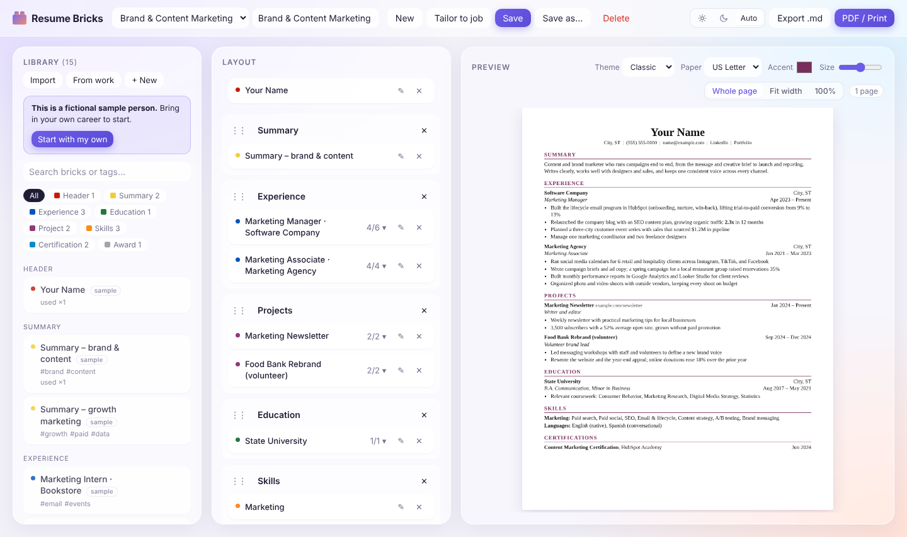
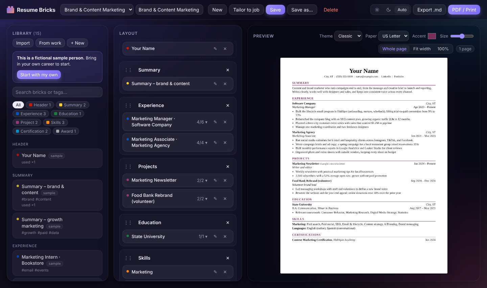
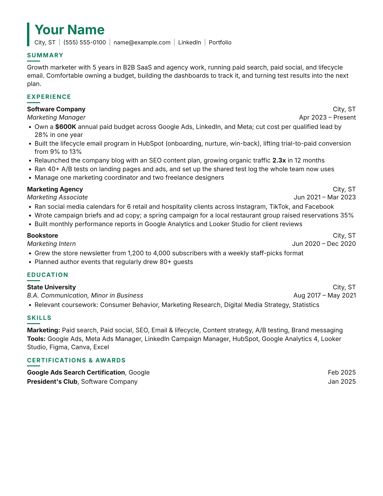
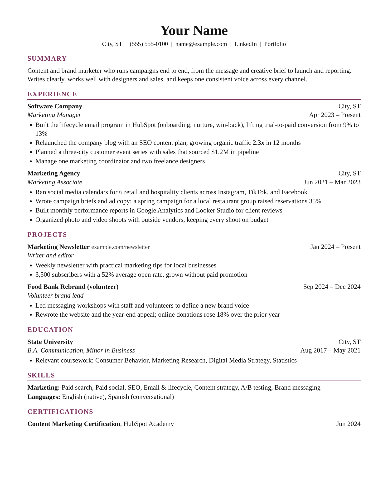

Write each job, project and skill once as a reusable “brick”. Paste a job post, and Resume Bricks assembles a one-page draft from your own experience. Pick the bullets, then save as PDF.
No sign-up · No API key · Your data never leaves your browser


Most people keep one resume and rewrite it for every application, losing good bullets along the way. Resume Bricks keeps your career as a library instead.
One brick per job, project, degree or skill group. Keep every version of a bullet and pick per application.
Paste the posting. The best-matching summary, experience and bullets are picked for you, trimmed to one page if you like.
Tailoring only chooses from what you wrote, and a match report shows the requirements none of your bricks cover.
Everything runs in your browser, including reading PDF and Word files. Nothing is uploaded. Download a backup any time.
Three steps. The first one takes a few minutes; after that, each new application takes seconds.
Drop in a PDF or Word file. It's split into bricks you can review. Or turn reports, slides and GitHub projects into bricks with Claude, no API key needed.
Paste a job post and get a draft built from your bricks. Drag to reorder, and choose which bullets show in this resume only.
Classic or Modern look, Letter or A4, live page-break guides. Export a clean PDF or Markdown.
Both were built from the same bricks of a fictional marketer: different order, different summary, different bullets.


The app opens with a fictional sample person, so you can see how it works before adding your own career.
Prefer plain files on your own computer? Run the local app (Node.js 18.17+) and keep everything as YAML you can version with Git:
git clone https://github.com/tsubasakoizumi1122/resume-bricks.git
cd resume-bricks
npm install
npm start経歴を「ブロック」としてストックして、応募先ごとに組み立てるレジュメ作成ツールです。職歴・プロジェクト・学歴・スキルを一度ずつ書いておけば、求人票を貼るだけで、自分の経験だけから1ページの下書きを作れます。見せる箇条書きを選んで、PDF で保存できます。
無料・登録不要。すべてブラウザの中で動き、データはどこにも送信されません。